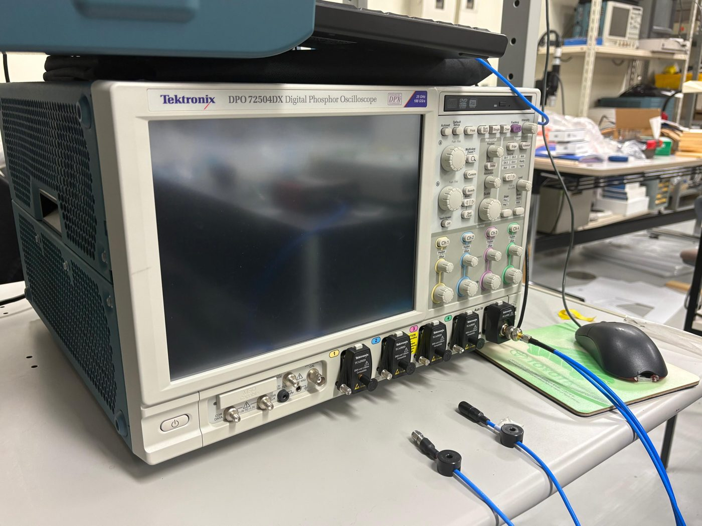
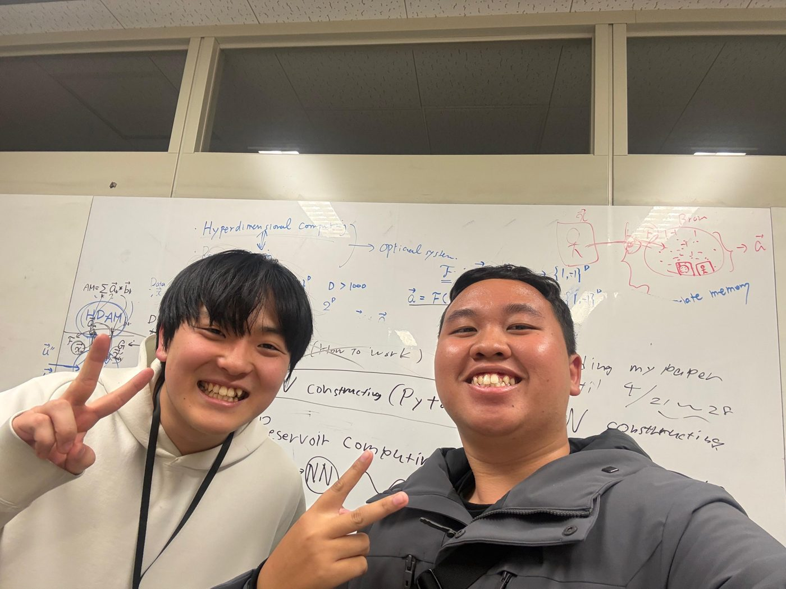
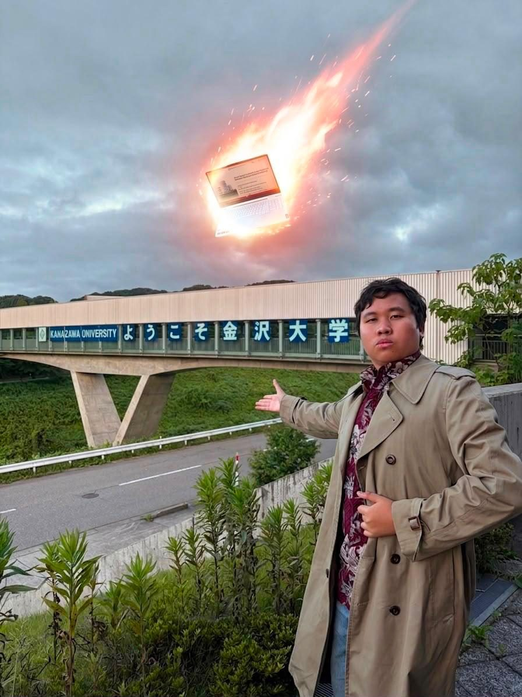
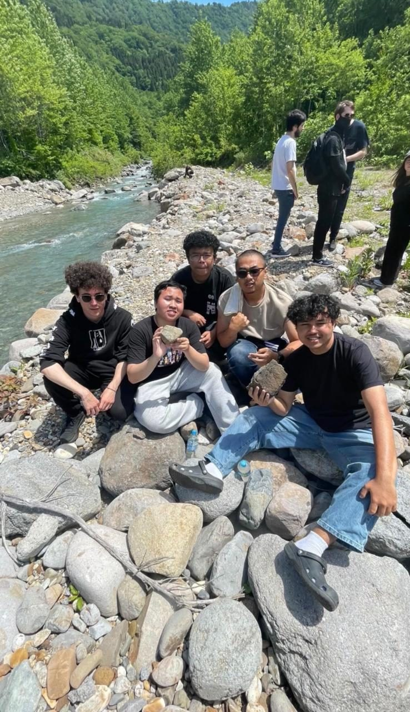

Hi, I'm Dio.
I build AI that reads light.
Final-year Informatics student at Telkom University. I spent a semester at Kanazawa University in Japan, teaching neural networks to rebuild light signals that are too fast for ordinary detectors. Now looking for AI internships and roles.
Dionisius Felysto Bagastama
Like in my research: a tiny cavity spreads one fast signal over several slower channels. Here, each channel is a way to read me.
Ch 1
The 30-second version
- Who
- Dio. S1 Informatics, International Class (2023 intake), Telkom University, Bandung, Indonesia.
- Looking for
- AI and machine learning internships now, and a full-time AI role after I graduate.
- Research
- A hybrid neural network readout for photonic reservoir sensing. First-author paper accepted at ICICyTA 2026.
- Experience
- Research Assistant, Kanazawa University (2026). Database Programmer intern, CV. Galatika Media Multi (2026). Editor for IEEE ICoDSA and ICoICT 2025.
- Tools
- Python, PyTorch, scikit-learn, NumPy, SciPy, Jupyter, SQL and ODBC, Kotlin, Java, Go, LaTeX, Git and GitHub Actions
- Languages
- English (TOEIC 845), Bahasa Indonesia, Sundanese, Javanese. Learning Japanese.
dionisiusfelysto1@gmail.com
Ch 2
How I got here
Bandung to Kanazawa and back. Scroll and follow the light.
- 2023Bandung
Started S1 Informatics in the International Class at Telkom University.
- 2025Bandung
Became an editor for two IEEE conferences, ICoDSA and ICoICT, and joined the Humanity journal team.
- 2025Bandung
5th place at HACKATTACK with BaSik, a reading app for kids.
- Spring 2026Kanazawa
Flew about 5,700 km to Japan for the KUEP exchange and joined the Sunada and Niiyama Lab.
- 2026Hakusan
A UNESCO field trip to Shiramine and Mount Hakusan. Between lab days, I made hotel beds part-time and kept learning Japanese.
- Aug 2026Bandung
Flew home with a research result to write up.
- Sep to Nov 2026Bandung
Internship at CV. Galatika Media Multi, and DATASCAPE 2026 with my group.
- Nov 2026Bandung
Paper accepted at ICICyTA 2026. The conference is in December.
Ch 2
Research: helping slow detectors see fast light
A photodetector can be fast or sensitive, but rarely both. A photonic reservoir, here a tiny silicon microcavity, spreads one fast optical signal over nine slower detector channels. A readout model then rebuilds the original signal from those channels.
The usual readout is plain linear regression, picked because it is cheap to train. At the Sunada and Niiyama Lab I tested compact neural networks instead, on signals measured from the real device. A small 1D CNN cut the error 2.5 times, and a 6.2k-parameter CNN even beat a 96.7k-parameter MLP. But when the detectors roll off more steeply, the CNN falls behind in the high band.
So I designed a hybrid readout. The CNN handles the low frequencies, linear regression takes the high band, and the crossover point is picked on validation data. It was never worse than the linear baseline on average in any setting I tested, and in a simulator calibrated to the device it also rebuilt images 2.1 to 3.8 times more accurately.


Ch 2
Try it: rebuild a fast signal
The white line is a fast signal. The faint blue line is what one slow detector sees. Pick a readout and a detector, and see how well each readout rebuilds the original.
This is an illustration, not the model running in your browser. The error added in each frequency band matches what the paper measured for that readout and detector.
Ch 2
Things I've built
-
DATASCAPE 2026
Sorting e-commerce package photos by quality, with my group.
Python, ConvNeXt V2, Kaggle
DATASCAPE 2026
The hard partOnly 3 submissions a day, and our grade depended on the leaderboard. Our holdout score (0.905 Macro F1) also came out higher than the public leaderboard (0.812).
What I didDesigned the models with my group, a 3-model ConvNeXt V2 ensemble. I also built the final notebook and wrote the solution write-up.
Python, ConvNeXt V2, Kaggle
-
WhatsApp for a cooperative's ERP
Teaching an old cooperative ERP to talk on WhatsApp.
Python, ODBC, Sybase, WhatsApp
WhatsApp for a cooperative's ERP
The hard partThe ERP runs on Clarion and Sybase with no modern API, and members send their payment proofs as photos in chat.
What I didConnected Python services to the ERP database over ODBC to send dues reminders and store replies. Then added AI filtering that checks amount, date and account on each proof and passes unsure cases to staff.
Python, ODBC, Sybase, WhatsApp
-
Emergency WhatsApp caller
One tap to reach the family, built for my grandmother's caregiver.
Kotlin, Android, GitHub Actions
Emergency WhatsApp caller
The hard partThe relative who looks after my grandmother finds phones hard to use, and her phone has data but not always credit. I also had no laptop at the time.
What I didBuilt the app from my phone and compiled the APK with GitHub Actions. Each family member gets a notification with their name and photo, and one tap starts a WhatsApp call.
Kotlin, Android, GitHub Actions
See the code -
BaSik (Baca Asik)
A reading app that gets kids excited about Indonesian folk stories.
HTML, JavaScript, AI
BaSik (Baca Asik)
The hard partMany children in villages get fewer chances at good learning than children in cities.
What I didWith my team, built a reading app with AI help around folk stories like Si Pitung, Tangkuban Perahu and Danau Toba, made for kids outside cities too. We placed 5th.
HTML, JavaScript, AI
-
Batik motif classification
Can a classic pipeline beat deep learning on batik motifs?
Python, scikit-learn, MobileNetV2
Batik motif classification
The hard partChoosing between hand-made texture features and a pretrained deep network for classifying motifs.
What I didCompared GLCM and LBP features with an SVM against MobileNetV2. The classic pipeline won with 71.4% accuracy, so now I always test a simple baseline first.
Python, scikit-learn, MobileNetV2
See the code
Ch 2
Where I've worked and helped
- Sep to Nov 2026Database Programmer intern, CV. Galatika Media MultiWhatsApp integration for a cooperative ERP, Bandung
- Apr to Aug 2026Research Assistant, Sunada and Niiyama Lab, Kanazawa UniversityKUEP exchange. Neural network readouts for ultrafast optical sensing
- Nov 2025 to nowEditor Assistant, Humanity journal, CoE HUMIC Telkom University
- 2025Editor, IEEE ICoDSA 2025 and IEEE ICoICT 2025Checked and formatted papers to IEEE standards
- 2025Secretary volunteer, ICoSEIT 2025, and Liaison Officer for international students
- 2025 to nowKSR-PMI, Student Volunteer HR, KMK mentorCampus organizations at Telkom University
Ch 3
The diagonal
Friends know me for one habit: when there are two obvious options, I look for a third. So here is the side of me that doesn't fit on a CV.
- 1st place in my high school's e-sports competition.
- Chef assistant for an event at BHIFEX Bandung.
- Made hotel beds part-time while studying in Kanazawa.
- Plays Warframe, Baldur's Gate 3 and Divinity: Original Sin 2. Builds Pokémon teams around odd combos.

